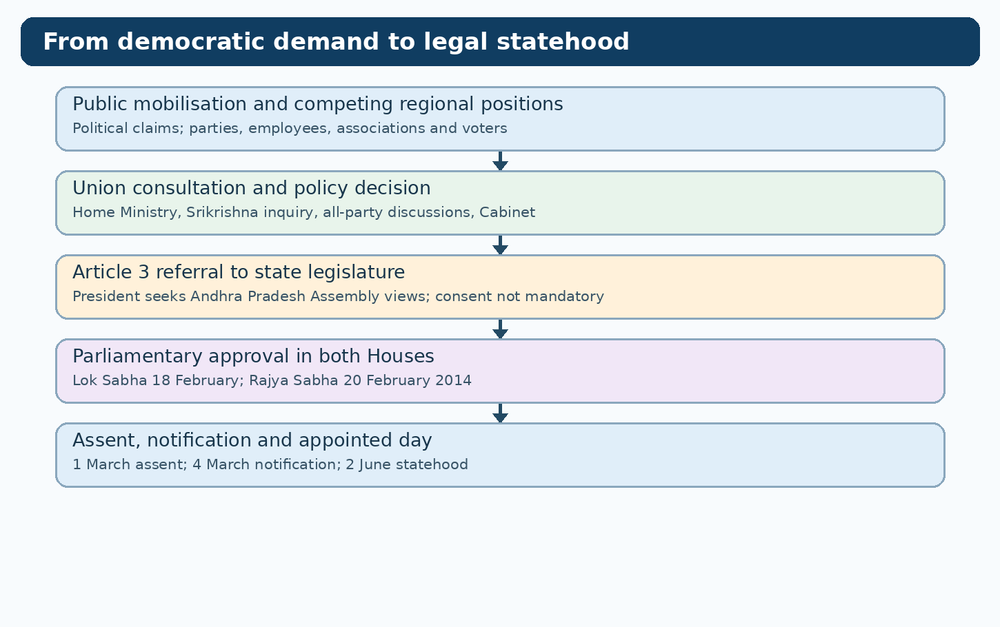
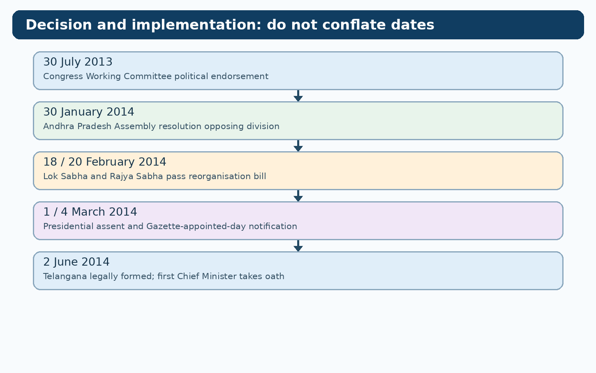
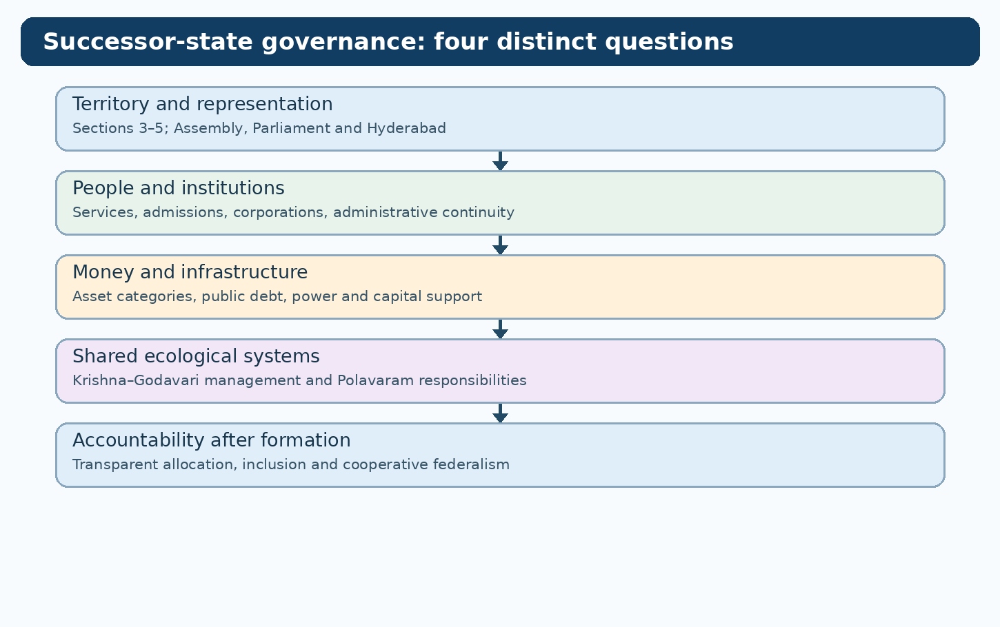

TGPSC Group I Mains | Original English study draft | 25 October 2026 | Independent academic review pending
Syllabus authentication: Notification No. 02/2024, Annexure II, Paper VI, Unit III, Item 5. The exact wording below is cross-checked against a full contemporaneous reproduction of the commission notification. The commission-hosted original could not be independently reopened in this run. All questions are original practice, not official PYQs.
Parliamentary Process; UPA Government’s stand on Telangana- All-Party Meeting- Anthony Committee- Statements on Telangana by Central Home Minister - Sri Krishna Committee Report and its Recommendations, AP Assembly and Parliamentary proceedings on Telangana, Declaration of Telangana State in Parliament, Andhra Pradesh State Reorganization Act, 2014- Elections and victory of Telangana Rashtra Samithi and the first Government of Telangana State.
| Official component | Detailed coverage | Critical distinction |
|---|---|---|
| UPA stand, all-party meetings and central statements | Sections 2–5, 9–10 | Coalition programme vs executive decision |
| Antony Committee and Srikrishna Committee | Sections 6–10 | Party consultation vs government inquiry |
| AP Assembly and Parliament proceedings | Sections 11–17, 30–31 | Assembly views vs parliamentary power |
| Declaration, Reorganisation Act, 2014 | Sections 17–29 | Assent vs appointed day; specific allocation rules |
| 2014 elections and first government | Sections 32–34 | Electoral mandate vs legal statehood |



Telangana's formation was a constitutional conversion of a contested regional demand into a legally operational state. The Union's consultations and party decisions were politically important but neither replaced Parliament's Article 3 power nor settled the administrative obligations that followed the appointed day.
The final phase of the Telangana movement is best understood as a transition across three different kinds of authority. Civil society and parties could articulate a demand; the Union executive could consult, decide and introduce legislation; only the constitutionally authorised legislative and executive process could alter state boundaries. The distinction matters because popular support does not by itself change a map, while parliamentary enactment does not erase the histories of mobilisation that made legislation politically possible. Telangana's experience illustrates the interaction of democratic pressure, party competition, administrative investigation and federal law. An adequate account therefore begins before the bill, with the Union's changing positions and its efforts to manage opposition within Andhra Pradesh, and ends after assent, with the legal and administrative consequences of the appointed day.
The term formation also has several meanings. A political announcement in July 2013 was not a statutory birth certificate; passage of the bill in February 2014 was not the same as commencement; and the first government's oath on 2 June 2014 was not the date on which Parliament first approved reorganisation. Confusing these stages produces inaccurate examination answers. Throughout this chapter, distinguish a party resolution, Cabinet approval, constitutional referral, parliamentary vote, presidential assent, Gazette notification, appointed day and election result. Each is an event with a different legal effect.
The demand for a separate Telangana did not begin in 2009 or 2013. Its arguments drew upon the 1956 merger safeguards, grievances over local employment and irrigation, the 1969 agitation, and the perceived limitations of later formulas such as the Six-Point Formula and Article 371-D. After the 1990s, associations, writers, teachers, employees and political formations revived the issue in a changing economic and cultural setting. The Telangana Rashtra Samithi (TRS), founded in 2001, made statehood a central electoral demand; other parties held shifting positions. This background explains why parliamentary consideration became an issue of legitimacy as well as territory.
Yet historical grievance is not equivalent to a settled empirical finding about every district or sector. Aggregate public expenditure, project location, access to water and actual outcomes can point in different directions. A sound mains answer identifies the specific grievance, its institutional channel, and the kind of evidence required to test it. The eventual Reorganisation Act was a legal response to a political settlement, not a judicial declaration that every earlier allegation had been proved.
The United Progressive Alliance (UPA) governed India from 2004 to 2014 under Prime Minister Manmohan Singh. In 2004 the Congress–TRS electoral relationship and the UPA's Common Minimum Programme created an expectation that Telangana would be examined through consultation and consensus. Such programme language was politically consequential but did not itself establish a new state or prescribe a binding deadline. Coalition partners, regional Congress leaders, opposition parties and the competing preferences of coastal Andhra, Rayalaseema and Telangana complicated the Union's choices.
A coalition promise is therefore different from a Cabinet decision. An electoral understanding may shape voters' expectations, but under the Constitution the creation of a state requires a bill in Parliament and compliance with Article 3 procedure. The UPA's difficulty lay in converting a politically useful formulation into an executable policy amid disagreement over Hyderabad, public employment, water, revenues and regional identity. The delay strengthened distrust among Telangana advocates, while residents opposing bifurcation questioned the economic and social consequences of division. Both positions require fair description rather than a retrospective assumption that the final outcome was inevitable.
All-party meetings were devices for gathering and testing political positions, not constitutional substitutes for legislative voting. A prominent meeting was convened by Union Home Minister Sushilkumar Shinde on 28 December 2012. Representatives of parties differed over separate statehood, procedure and the status of Hyderabad. The Home Minister indicated that a decision would follow consultations, but the timetable remained contested. The absence of unanimity demonstrated that the phrase all-party meeting must not be mistaken for all-party agreement.
For historical analysis, distinguish three possible outputs of consultation: a recorded statement by a party, an agreed recommendation and an executive decision. A meeting can produce the first without producing the second or third. Where certified minutes are unavailable, a researcher should cite a dated ministry release or contemporaneous report, identify its limits and avoid attributing an unverified quotation to every participant. The key institutional lesson is that consultation informed executive judgment while the final constitutional authority remained elsewhere.
The Home Ministry became the Union's principal public channel for communicating policy on Telangana. P. Chidambaram's statement of 9 December 2009 said the process of forming Telangana would be initiated; the statement of 23 December 2009 stressed wider consultation in view of changed political circumstances. The apparent reversal deepened distrust and triggered further agitation. Sushilkumar Shinde later presided over all-party consultations and managed the 2013–14 legislative phase. These announcements should be read as executive political communications, not as the text of a statute.
A timeline is necessary because a single phrase such as the Centre agreed hides differences between willingness to begin a process, a formal Cabinet proposal, the President's constitutional referral and the passage of a bill. For an examination answer, use the date, the speaker, the institutional capacity and the legal consequence. The Home Minister may announce intent, but cannot create a state through a press statement. That distinction is essential to explain why the agitation continued after December 2009.
The Union appointed the Committee for Consultations on the Situation in Andhra Pradesh (CCSAP), chaired by retired Supreme Court judge Justice B. N. Srikrishna, in 2010. It examined the political, economic and social context and invited representations from regions and stakeholders. Its report was submitted in December 2010 and made public in January 2011. The Ministry of Home Affairs maintains an official repository for the report and appendix. The committee was an executive fact-finding and options body; it was not a court, elected assembly or body empowered to redraw state boundaries.
A committee report can illuminate competing narratives without determining the political result. Its recommendations are advisory, and a later government may choose a different path for reasons of representation, stability or policy. The report's evidentiary value also depends on the quality of the underlying tables and submissions. Where claims about irrigation, education or employment are disputed, compare indicators, denominators and periods rather than accepting one aggregate as conclusive. The existence of a committee is not proof that all parties accepted its analysis.
The committee listed six broad alternatives. Option 1 maintained the status quo. Option 2 contemplated Telangana and Seemandhra with Hyderabad as a Union Territory and separate capitals. Option 3 considered a Rayala-Telangana configuration. Option 4 considered bifurcation with an enlarged Hyderabad metropolitan Union Territory. Option 5 envisaged Telangana and Seemandhra on existing regional boundaries, Hyderabad being Telangana's capital and a new capital for Seemandhra. Option 6 retained a united Andhra Pradesh with strengthened constitutional or statutory measures and a Telangana Regional Council.
The report regarded the sixth alternative as the most workable on balance, while treating separate Telangana with Hyderabad as its capital as a serious alternative, often described as a second-best course with challenges. This is not the same as saying that the committee recommended only separation, or that the Union was legally bound to adopt its preferred option. The options reflect different trade-offs: territorial self-government, metropolitan interests, fiscal adjustment, administrative continuity and potential conflict. A good answer compares them in a matrix instead of merely memorising six labels.
The committee's preference for a united state with stronger regional safeguards rested partly on concern about the social and economic costs of division. Telangana proponents argued that earlier safeguards had failed and that institutions controlled within a separate state were more credible than another promise inside a united one. Opponents of division stressed integrated infrastructure, the importance of Hyderabad, regional interdependence and the risk of uncertainty for residents and businesses. Neither side can be represented accurately by reducing the debate to emotion versus economics.
A critical assessment asks what a regional council could enforce, how its funding and powers would be protected, whether employment safeguards could be monitored and what remedies existed for breach. The counterfactual is important: a constitutional or statutory promise may work if backed by clear powers, budgets, transparency and enforcement, but repeated implementation failures reduce confidence. The 2014 Act chose territorial reorganisation while retaining a substantial framework of inter-state coordination. That outcome did not remove the need for ongoing cooperative federalism.
On 30 July 2013 the Congress Working Committee endorsed the creation of Telangana, and the UPA coordination process supported moving towards a separate state. This was a major political turning point. It was not, however, the enactment of a law. The Union Cabinet subsequently considered the proposal and the detailed terms of bifurcation. A party body can settle its party's stance, while the Cabinet directs executive policy; neither alone can satisfy Article 3.
The decision generated celebration in Telangana and protests in Seemandhra. Questions about Hyderabad's status, education admissions, river-water projects, public debt, power distribution and employees required legislative drafting. These technical issues help explain why a political announcement could not be implemented immediately. Students should distinguish policy authorisation from legal implementation: the former tells officials what to prepare; the latter gives legal effect to defined territories, institutions, assets and obligations.
Following the July 2013 decision, the Congress set up a party committee associated with A. K. Antony to hear concerns, especially from Seemandhra. Its work concerned political reassurance and the practical consequences of bifurcation. It was not the same as the Srikrishna Committee, which had a government-appointed consultative mandate and a public report. Nor was the Antony panel the constitutionally required forum under Article 3.
This distinction matters in exam questions that combine All-Party Meeting, Antony Committee and Srikrishna Report in one line. They operated at different stages and with different authority. A party panel could collect grievances and suggest accommodation, but could not allocate river water or bind Parliament. Where the original committee minutes or a complete signed report are not available, avoid inventing a list of binding recommendations. Its historical significance lies in managing intra-party and inter-regional tensions as legislation approached.
Article 3 empowers Parliament to form new states and alter the area, boundaries or names of existing states, subject to specified procedure. A bill for this purpose may be introduced in either House only on the President's recommendation. Where the proposal affects a state's area, boundaries or name, the President refers it to the affected state legislature for expressing views within the specified period or extended period. The provision requires an opportunity for views; it does not require the legislature's consent.
The distinction is foundational to Indian federalism. States have constitutionally protected institutions but not an absolute veto over boundary changes. Parliament's power is nonetheless structured by constitutional process, legislative debate and political accountability. In Telangana's case, Andhra Pradesh's legislature could oppose the proposal, but opposition was not legally equivalent to rejecting a constitutional amendment requiring state ratification. An answer that says the Assembly approved the division is factually wrong; an answer that says the Assembly had no role is also wrong.
Article 4 permits laws made under Articles 2 and 3 to contain supplemental, incidental and consequential provisions, including changes to the First and Fourth Schedules. Such a law is not treated as a constitutional amendment for the purposes of Article 368 merely because it adjusts those schedules. The Andhra Pradesh Reorganisation Act, 2014 was ordinary parliamentary legislation using this constitutional architecture.
This explains how a single Act could establish a state and simultaneously deal with legislative representation, services, institutions and the transition. It does not mean Parliament may disregard every other constitutional limitation or dispense with the Article 3 referral. The conceptual contrast is between changing the territorial structure through the Constitution's specified mechanism and amending the Constitution by the special majorities of Article 368. A mains response should name both Articles 3 and 4 and explain their relationship.
The Andhra Pradesh Reorganisation Bill was referred for the state legislature's views. The debate was intense, reflecting sharply opposed regional mandates. On 30 January 2014 the Assembly adopted a resolution opposing the proposal. The resolution was politically significant and documented resistance, but the Article 3 consultation was not a referendum or consent vote. Parliament retained power to proceed after the required referral and time for views.
The Assembly's objection should not be caricatured as a mere technicality. Legislators expressed concerns about shared infrastructure, Hyderabad, financial consequences and identity. Telangana legislators and supporters argued that statehood was a long-standing democratic demand and that consultation should not become a permanent veto. A balanced account separates the legality of proceeding from the quality of political deliberation. Constitutional power can exist even where the process is divisive and contested.
State formation requires more than a boundary clause. Administrators must determine how to transfer territorial offices, divide service cadres, continue contracts, assign debts and deposits, handle litigation, protect residents' rights and establish electoral institutions. A draft bill therefore becomes a negotiation over the meaning of separation. For Telangana and residuary Andhra Pradesh, Hyderabad's infrastructure and fiscal importance intensified these questions.
The bill also had to specify which provisions would take effect immediately and which would operate from the appointed day. Transitional mechanisms prevent a legal vacuum: schools must remain open, police must exercise lawful jurisdiction, pensioners must receive payments and courts must continue functioning. The existence of elaborate schedules and sections in the final Act is evidence that constitutional reorganisation is also a problem of public administration. A study answer should connect parliamentary passage to implementation duties, not stop at a date.
The Andhra Pradesh Reorganisation Bill passed the Lok Sabha on 18 February 2014 amid disruption and controversy about parliamentary procedure and broadcasting. The government's supporters viewed passage as fulfilment of a long-delayed democratic demand. Opponents questioned the haste, management of debate and safeguards for residuary Andhra Pradesh. Parliamentary passage was legally consequential because the elected House approved the text that would proceed to the Council of States.
Do not confuse the bill's introduction, consideration and passage, or claim that every procedural criticism was judicially resolved in the movement's favour. For an exam, identify the House, date and stage, then describe contested circumstances with neutral language. The important institutional point is that Parliament was acting under Articles 3 and 4; neither a street mobilisation nor an executive press release could substitute for its decision.
The Rajya Sabha passed the bill on 20 February 2014. Debate focused on the division of Andhra Pradesh, Hyderabad, resource sharing and assurances for the residuary state. Parliamentary exchanges reflected a mixture of national-party calculations and regional interests. Passage by both Houses completed the principal legislative stage, but the bill still required presidential assent and notification of the appointed day before the new state formally existed.
A common error is to write that Telangana was formed on 20 February. That date marks completion of parliamentary passage, not the statutory commencement of statehood. Another error is to describe the Rajya Sabha as a powerless formality. Its debates and consent are part of the bicameral process. Even when votes are politically predictable, scrutiny of transition provisions matters because public finance, water and administrative continuity affect millions of residents.
President Pranab Mukherjee gave assent to the Andhra Pradesh Reorganisation Act on 1 March 2014. It became Act No. 6 of 2014. The Act's enactment date and the appointed day are separate concepts: the former records when the bill became law, while the latter specifies when the territorial reorganisation takes legal effect. The Union subsequently issued a Gazette notification, S.O. 655(E) dated 4 March 2014, fixing 2 June 2014 as the appointed day.
This distinction is not pedantic. Civil servants need a precise legal cut-off for ownership of records, service allocation, electoral arrangements and institutional succession. A transaction before the appointed day may belong to the undivided state's administration; the same kind of transaction afterwards may be attributable to a successor state. Examination questions often test these dates because they expose whether a candidate understands legislation as an operating system for government rather than as a ceremonial declaration.
On 2 June 2014 Telangana formally came into existence as a state of the Indian Union, with residuary Andhra Pradesh continuing as the other successor state. The new Telangana initially comprised ten districts under the then administrative configuration. The date was fixed under the Act by the Union's 4 March notification. Later changes to district boundaries must not be projected backwards onto the 2014 formation map.
An appointed day is a coordination device. It aligns the commencement of territorial provisions with transfers of authority and continuity arrangements. Officials cannot assume that every institutional dispute was settled on that morning; the Act created rules and forums for later resolution. Thus 2 June marks legal statehood, while administrative separation continued through service allocation, infrastructure arrangements and inter-state negotiations. A historically accurate narrative holds both facts together.
Section 3 of the Reorganisation Act provides for the formation of Telangana from specified territories of the existing Andhra Pradesh. It is the territorial core of the law, read with the definitions and schedules. A boundary rule determines the jurisdiction of elected representatives, district administration, courts, police and tax authorities. It also sets the foundation for location-based allocation of some assets and obligations.
The statutory map must be distinguished from slogans about ten districts, which describe the initial administrative grouping, not a timeless constitutional number. Territorial reorganisation can later be followed by district reorganisation under state law. The Act's legal description matters especially for boundary disputes and institutions whose operations crossed the new state line. Students should avoid inventing a district list from today's administrative map when describing June 2014.
Section 5 provided that Hyderabad would be the common capital of Telangana and Andhra Pradesh for a period not exceeding ten years from the appointed day, with Hyderabad thereafter the capital of Telangana and Andhra Pradesh to establish a new capital. This transitional arrangement was not the creation of a permanent Union Territory. It recognised Hyderabad's infrastructure while giving the residuary state time to organise a separate seat of government.
The difference between common capital and joint ownership of the city is important. Hyderabad remained within Telangana's territory. Temporary arrangements concerning use of buildings, security and administration did not mean that every part of the city became extraterritorial. Section 8 addressed special responsibilities of the Governor during the common-capital period. Interpret these provisions according to their text and later legal developments rather than relying on a vague statement that Hyderabad belonged equally to both states.
Section 8 specified special responsibilities for the Governor in relation to the common capital, including the security of life, liberty and property and certain law-and-order considerations. The transitional design sought reassurance for residents and institutions at a moment of political uncertainty. It also raised questions about democratic accountability and the balance between the elected state government and a constitutionally appointed Governor.
The relevant analytical question is not whether security mattered—it did—but how responsibilities were to be exercised consistently with constitutional government and statutory limits. A Governor's role cannot be inferred from a newspaper headline alone; the precise Act and any applicable directions must be consulted. Students should distinguish these special transitional provisions from the Governor's ordinary constitutional functions and should not generalise them to every future law-and-order issue in Hyderabad.
Reorganisation required new electoral arrangements. The Act allocated 17 Lok Sabha seats and 119 Legislative Assembly constituencies to Telangana at formation, alongside the corresponding arrangements for residuary Andhra Pradesh. Legislative representation is more than arithmetic: it determines who can speak and vote for the successor states in national and state institutions. The composition of the Legislative Council and transition of sitting members also required statutory provisions.
An electoral map does not automatically reflect identical populations in every constituency; delimitation and reserved-seat rules govern the distribution. Students should distinguish parliamentary constituencies from Assembly constituencies, and the 2014 election results from later changes through by-elections or party defections. In 2014, 60 of 119 Assembly seats constituted a simple majority; TRS's 63 seats therefore enabled it to form a government without a post-poll coalition for the majority threshold.
State formation changes the employer and cadre management context for many public servants. The Act's service provisions established a framework for allocating personnel between successor states, protecting service continuity and dealing with inter-state and all-India service issues. Allocation involves criteria, records, seniority, options where applicable and administrative orders; it is not simply a matter of moving every employee to their birthplace.
The Telangana movement had placed local employment at the centre of its historical grievances. Yet implementation after 2014 required legal precision and procedural fairness for employees from both regions. An officer's permanent address, cadre status, recruitment rules and posting history may not coincide. A defensible administrative process publishes criteria, permits representations and records reasons. For mains answers, distinguish the historical debate over local recruitment safeguards from the transitional allocation of existing personnel under the 2014 Act.
The Act contained detailed rules for division of public debt, assets, institutions and undertakings. It defined a population ratio of 58.32:41.68 for Andhra Pradesh and Telangana for purposes where that ratio applied. The figure is not a universal rule for every asset. Some assets follow location, some are shared or apportioned according to specific statutory criteria, and some questions require subsequent agreement or Union determination.
This is an important examination trap. Writing that all assets were divided 58.32:41.68 ignores location-based rules and special categories. For example, a government building located exclusively within one successor state may be treated differently from the headquarters assets of an institution serving both states. The administrative challenge is to classify each asset before selecting the statutory formula. Transparent inventories and audited liabilities are essential because unclear classification can become a long-running inter-state dispute.
Power generation and transmission networks rarely follow a political boundary neatly. Reorganisation had to consider generation stations, transmission assets, power purchase agreements, employees, outstanding dues and the financial health of distribution utilities. The Act and associated arrangements provided a starting framework, but implementation required coordination between regulators, corporations and both successor governments.
The general lesson is that physical interdependence survives territorial division. A power plant in one state can serve consumers in another under contractual or regulatory arrangements. Students should avoid treating the location of a generating unit as sufficient proof of entitlement to all its electricity. Similar issues arise for road transport corporations, warehouses, educational institutions and public enterprises. The legal question depends on the nature of the asset, the service area and the relevant statutory provision.
The Krishna and Godavari river systems connect Telangana and Andhra Pradesh through upstream and downstream catchments, reservoirs, irrigation commands and drinking-water requirements. The Act provided for institutional arrangements concerning river management, including river management boards and an apex-level mechanism. Such bodies operate within a wider constitutional and statutory setting that includes existing awards and water-dispute procedures.
A river does not acquire a new source or flow direction when a state boundary changes. The practical challenge is to combine lawful allocations, data sharing, dam safety, seasonal operations and protection of affected communities. Telangana's earlier complaints about irrigation priorities are relevant historical context but cannot alone settle post-2014 entitlement questions. A strong answer identifies the institutional forum, the specific project or basin and the difference between water allocation, operational release and infrastructure ownership.
The Act addressed the Polavaram Irrigation Project through a specific statutory provision, treating it as a national project and setting out responsibilities. Polavaram illustrates why reorganisation cannot be assessed solely from the capitals: reservoir submergence, rehabilitation, inter-state consent, financing and downstream benefits implicate multiple regions and populations. Project approval and rehabilitation duties should not be conflated.
For Telangana, the issue raises questions about affected habitations and tribal rights; for Andhra Pradesh, it is tied to irrigation and development planning. The sound analytical method is to identify the project's legal basis, the relevant statutory responsibility and the rights of affected persons. Avoid presenting all objections as anti-development or all project claims as automatically lawful. Project-specific primary documents, environmental clearances and rehabilitation records are necessary before making precise claims about displacement or cost.
Students and families feared abrupt disruption of higher education and professional admissions. The Act included transitional provisions relating to educational opportunities and institutions, while schedules addressed named national and educational institutions. These measures were intended to reduce uncertainty as two states developed their own administrative arrangements.
A transitional admission arrangement is not the same as a permanent exemption from domicile or local-area rules. Similarly, an institution named in a schedule may require years of funding, land, staffing and construction before becoming fully operational. Mains answers should distinguish a statutory promise to establish or facilitate an institution from the later administrative outcome. This avoids the misleading claim that every listed institution existed at full capacity on 2 June 2014.
Bifurcation left residuary Andhra Pradesh without Hyderabad as its long-term capital. The Act included provisions concerning financial assistance and development support, alongside political assurances made during parliamentary debate. These two categories must be distinguished: an express statutory duty has a different legal status from a ministerial statement or subsequent policy decision. The state's capital-development challenge was real, but its fiscal solution depended on budgeting, implementation and later decisions.
The debate also illustrates distributive federalism. Telangana advocates viewed Hyderabad as geographically and historically part of their state; Andhra Pradesh representatives highlighted the investments, jobs and services tied to the city. A careful answer recognises both perspectives and explains the common-capital transition as a negotiated administrative response, not as proof that one region's historical argument was false.
The Article 3 procedure is often discussed in a simplified slogan: Parliament can create states. The fuller statement is that Parliament has the power subject to presidential recommendation and consultation with the affected legislature. The legislature's opinion is important evidence of political disagreement, but not a legally binding veto. Telangana's experience shows this design under maximum stress because the state Assembly formally opposed the proposed division.
There is a normative debate behind the rule. Strong central reorganisation powers may permit resolution of entrenched regional demands when a state-level majority blocks them. The same powers may appear insufficiently protective of an existing state's democratic preference. The Constitution resolves the legal question, but not every political legitimacy question. A high-quality mains answer separates descriptive constitutional law from evaluation of federal balance, consultation quality and protection of minorities in both successor states.
The February 2014 parliamentary proceedings were marked by disorder and controversy. Supporters emphasised the urgency of implementing a long-standing statehood demand; critics objected to the manner of consideration and the perceived insufficiency of safeguards. Neither description should replace the record of the two Houses' passage and presidential assent. Constitutional legality and the perceived quality of parliamentary deliberation are related but distinct questions.
A rigorous analysis should consider the legislative record, the content of the enacted statute and subsequent implementation. Claims about what particular member said or which vote was demanded should be checked against official debates, not repeated from partisan summaries. The case illustrates a broader challenge: when political stakes are high, a legislature must both make a decision and preserve public confidence in the fairness of the process.
The 2014 elections in the Telangana region took place before the appointed day but determined the representatives who would serve in the new state's institutions. The TRS won 63 of 119 Assembly seats, above the 60-seat majority threshold. Congress won 21, TDP 15, AIMIM 7 and BJP 5; smaller parties and an independent won the remaining seats. The result gave TRS a clear Assembly majority and allowed it to form the first government.
An electoral mandate is not a plebiscite on every clause of the Reorganisation Act. Voters considered leadership, party organisation, local candidates and welfare promises as well as statehood. It is therefore analytically wrong to assume that every vote for TRS endorsed a specific water-sharing formula, or that every vote for another party opposed Telangana. Elections converted a mass movement's political energy into representative authority under constitutional rules.
K. Chandrashekar Rao was sworn in as the first Chief Minister of Telangana on 2 June 2014, with E. S. L. Narasimhan administering the oath as Governor. This was a distinct constitutional event from parliamentary passage and the Union's appointed-day notification. The first ministry assumed responsibility for administration, budgeting, legislation and the new state's policy priorities.
The transition from agitation to government changed the standards by which leaders would be judged. During a movement, legitimacy often comes from representation of grievances and capacity to mobilise. In office, legitimacy also requires service delivery, rule-bound recruitment, financial accountability and protection of dissent. The first government's formation thus closes the narrative of state creation while opening a new chapter of state-building. The two processes should not be treated as synonymous.
Separate statehood can improve proximity between citizens and decision-makers, but it does not automatically end caste inequality, gender exclusion, tribal land disputes or regional imbalances within Telangana. New institutions must decide how resources are allocated among Hyderabad, rural districts, scheduled areas and historically underserved communities. Movement participants may disagree after formation about who benefits and whose demands remain unresolved.
An analytically strong conclusion distinguishes the achievement of territorial self-government from the performance of that government. The former is a dated constitutional fact; the latter requires ongoing empirical evaluation. A serious administrative answer asks for district-level outcomes, transparent budget data, employment compliance and mechanisms for public participation. This avoids both triumphalist claims that statehood solved every grievance and dismissive claims that legal formation had no democratic significance.
This topic contains several evidence types: the constitutional text and Act, Gazette notifications, parliamentary proceedings, committee reports, party statements, election returns and newspaper accounts. They are not interchangeable. A Gazette notification is authoritative for an appointed day; a party press release is authoritative for the party's stated position, not for whether its policy worked; a newspaper may establish that a controversy was reported, not the truth of every allegation.
The source audit should identify which original documents were directly accessed and which were merely indexed or reproduced. Historical accounts of crowd sizes, meeting consensus, behind-the-scenes negotiations and fiscal loss are particularly prone to disagreement. Where originals are missing, say so and avoid precision that cannot be justified. Exam preparation benefits from this discipline: a few accurately sourced dates and legal distinctions are more valuable than a long catalogue of unsupported numbers.
Telangana's formation illustrates a constitutional response to a claim that intra-state safeguards and decentralisation were insufficient. Other possible responses might have included regional councils, stronger local employment oversight, statutory investment guarantees or special administrative zones. Each changes a different part of the institutional structure. A regional council may improve voice without creating a new legislature; a new state creates an executive and Assembly but must still cooperate over shared resources.
The appropriate comparison is not simply small states are good versus large states are efficient. Governance depends on fiscal capacity, institutional quality, social inclusion and inter-governmental arrangements. A well-designed regional safeguard can work where enforcement is credible; a new state can fail to deliver if accountability is weak. Telangana's experience therefore provides a case for evaluating federal institutional design through implementation, not only through the political symbolism of boundaries.
The sequence from 2004 promises through 2009 statements, the 2010 committee, the 2012 all-party meeting, the July 2013 decision, the January 2014 Assembly opposition, February parliamentary passage, March assent and June appointed day reveals a chain of changing institutional authority. Each stage responded to pressures from the previous stage and generated new questions for the next. The chronology is useful because it prevents teleology: there were moments when different settlements were actively considered.
When constructing a timeline, label each event by its type. Mark 30 July 2013 as a party-political decision, not the birth of a state; 18 and 20 February 2014 as parliamentary passages, not commencement; 1 March as assent; 4 March as appointed-day notification; and 2 June as legal formation and inauguration of the first government. A correct answer earns marks not just for dates but for explaining what changed at each date.
The formation of Telangana was the product of long mobilisation, a contested Union policy process, constitutionally structured parliamentary legislation and the administrative work of state succession. The 2014 Act is indispensable to understanding the legal result, but it does not replace the social history of grievances and organising. Conversely, historical grievances cannot explain the specific allocation of debt, common-capital provisions or service rules without reading the statute.
The best examination answer combines four lenses: political legitimacy (why a separate state was demanded), constitutional authority (who could decide), administrative design (how two states could function) and democratic accountability (what happened after formation). It acknowledges legitimate disagreements without inventing a consensus. Telangana's creation on 2 June 2014 was a decisive constitutional outcome; the obligations of fair governance, transparent institutions and cooperative federalism continued beyond that date.
| Date | Institution/event | Why it matters |
|---|---|---|
| 9 December 2009 | Union Home Minister P. Chidambaram | Announced initiation of process; not legal formation |
| 23 December 2009 | Union Home Minister | Further consultation following changed circumstances |
| December 2010 / January 2011 | Srikrishna Committee | Report submitted / public discussion of six alternatives |
| 28 December 2012 | All-party meeting chaired by Sushilkumar Shinde | Recorded competing party positions |
| 30 July 2013 | Congress Working Committee | Political endorsement of separate Telangana |
| 30 January 2014 | Andhra Pradesh Assembly | Opposed bill; views not binding consent |
| 18 February 2014 | Lok Sabha | Bill passed first House |
| 20 February 2014 | Rajya Sabha | Bill passed second House |
| 1 March 2014 | President | Assent to Act No. 6 of 2014 |
| 4 March 2014 | Union Gazette S.O. 655(E) | Fixed appointed day |
| 2014 election | Telangana Assembly region | TRS 63 of 119 seats |
| 2 June 2014 | Appointed day and first ministry | Legal statehood; K. Chandrashekar Rao sworn in |
| Do not conflate | Correct contrast |
|---|---|
| Srikrishna Committee / Antony Committee | Government-appointed advisory inquiry / Congress party consultation panel |
| Article 3 / Article 368 | State territorial reorganisation / formal constitutional amendment process |
| State legislature's views / consent | Views required on referral; consent not constitutionally mandatory |
| Hyderabad common capital / Union Territory | Temporary common-capital use within Telangana; not a permanent UT |
| Assent / appointed day | Act became law on 1 March; state formed on 2 June |
| Population ratio / every asset | 58.32:41.68 only where relevant statute applies; other categories differ |
| Political victory / statutory commencement | TRS majority did not itself create the state |
Blueprint A — Constitutional process: Historical demand → Article 3 recommendation and referral → Assembly views → two Houses → assent → appointed day → federal assessment.
Blueprint B — Committees: Political context → committee mandate → six options → preferred alternative → limits of advice → Union's different decision → critical assessment.
Blueprint C — Reorganisation Act: Territory → Hyderabad → legislative representation → services and assets → water/power → education → implementation challenges.
Blueprint D — 2014 chronology: 2009 statements → 2010 report → 2012 consultation → 2013 decision → January Assembly → February Parliament → March assent/notification → June statehood.
Blueprint E — First government: 119-seat Assembly → TRS 63-seat mandate → June 2 oath → administrative continuity → equity and accountability challenges.
A district officer hears that the Andhra Pradesh Assembly voted against the bill and is asked whether Parliament is barred from proceeding. Explain that Article 3 requires a referral for views, not consent. Verify that the prescribed period was allowed, then separate the constitutional question from concerns about deliberation and political legitimacy. Do not claim the Assembly approved the bill.
Answer approach: Identify the controlling legal authority, check primary records, distinguish fact from allegation, state the competing public interests, and conclude with a reasoned administrative decision.
An official must classify a building used by departments of the undivided state. First establish legal title, location, function and whether the Act or a later allocation order treats it as a common-capital facility. Do not apply the population ratio mechanically to immovable property. Record the inventory and provide an auditable basis for continued use or transfer.
Answer approach: Identify the controlling legal authority, check primary records, distinguish fact from allegation, state the competing public interests, and conclude with a reasoned administrative decision.
A public servant with long service in Hyderabad is allotted to a successor cadre and alleges unfairness. Examine the applicable service provisions, cadre rules, options and allocation criteria. Provide notice and a reasoned grievance process. Birthplace alone is not necessarily the governing rule, and historical local-recruitment grievances are distinct from transitional personnel allocation.
Answer approach: Identify the controlling legal authority, check primary records, distinguish fact from allegation, state the competing public interests, and conclude with a reasoned administrative decision.
A student enrolled before the appointed day asks whether state formation immediately cancels admissions protections. Review the specific transitional education provision, institution rules and dates; avoid promising permanent exemption. The proper administrative response is a written clarification identifying the legal authority, eligibility period and appellate channel.
Answer approach: Identify the controlling legal authority, check primary records, distinguish fact from allegation, state the competing public interests, and conclude with a reasoned administrative decision.
Farmers on different sides of the new border dispute an irrigation release. The administrator must identify the basin, project, lawful allocation, operational instructions and relevant river-management institution. Political claims about historical neglect cannot substitute for hydrological measurements, dam-safety duties and enforceable orders. Publish data and protect downstream users.
Answer approach: Identify the controlling legal authority, check primary records, distinguish fact from allegation, state the competing public interests, and conclude with a reasoned administrative decision.
A department wants to announce that every resource was divided 58.32:41.68. The finance officer must correct the claim: the Act uses category-specific allocation rules and applies the population ratio only where specified. Build separate registers for location-based assets, liabilities, institutions, power contracts and pending disputes, with audit trails and published assumptions.
Answer approach: Identify the controlling legal authority, check primary records, distinguish fact from allegation, state the competing public interests, and conclude with a reasoned administrative decision.
These are author-created practice questions; no item is represented as an official TGPSC previous-year question.
A. Article 3 B. Article 19 C. Article 280 D. Article 356
Answer: A. Article 3. Article 3 provides the territorial reorganisation power; Article 4 handles consequential provisions.
A. Binding consent B. Its views C. A judicial judgment D. A national referendum
Answer: B. Its views. The President refers the proposal for views; a negative resolution does not veto Parliament.
A. Article 14 B. Article 32 C. Article 4 D. Article 368
Answer: C. Article 4. Article 4 permits related schedule changes without an Article 368 amendment merely for that reason.
A. Justice B. N. Srikrishna B. Justice J. S. Verma C. Justice K. G. Balakrishnan D. Justice P. N. Bhagwati
Answer: A. Justice B. N. Srikrishna. The Union appointed the committee under retired Supreme Court judge Justice B. N. Srikrishna.
A. Option 2 B. Option 4 C. Option 5 D. Option 6
Answer: D. Option 6. Option 6 envisaged continued unity with regional empowerment and safeguards.
A. Option 1 B. Option 3 C. Option 5 D. Option 6
Answer: C. Option 5. Option 5 addressed separate Telangana on existing boundaries with Hyderabad as its capital.
A. 28 December 2012 B. 9 December 2009 C. 30 July 2013 D. 2 June 2014
Answer: A. 28 December 2012. The 28 December 2012 meeting gathered party positions; it was not a binding unanimous accord.
A. Presidential notification B. Congress Working Committee endorsement C. Supreme Court order D. Statehood commencement
Answer: B. Congress Working Committee endorsement. It was a party-political turning point, not the appointed day or an Act.
A. A Supreme Court bench B. An Election Commission tribunal C. A Congress political consultation panel D. A statutory river board
Answer: C. A Congress political consultation panel. The Congress panel addressed political and regional concerns; it did not exercise Article 3 powers.
A. Finance Commission B. Srikrishna Committee C. NITI Aayog D. National Human Rights Commission
Answer: B. Srikrishna Committee. The Committee for Consultations on the Situation in Andhra Pradesh submitted its report in December 2010.
A. 30 January 2014 B. 18 February 2014 C. 1 March 2014 D. 2 June 2014
Answer: A. 30 January 2014. The Assembly opposed the bill, but Article 3 did not make its consent mandatory.
A. 20 February 2014 B. 18 February 2014 C. 4 March 2014 D. 30 July 2013
Answer: B. 18 February 2014. 18 February was the Lok Sabha passage date; the Rajya Sabha followed two days later.
A. 18 February 2014 B. 1 March 2014 C. 20 February 2014 D. 2 June 2014
Answer: C. 20 February 2014. Both Houses had approved the bill by 20 February 2014.
A. 1 March 2014 B. 4 March 2014 C. 2 June 2014 D. 30 January 2014
Answer: A. 1 March 2014. Assent was on 1 March; 4 March fixed the appointed day through notification.
A. G.O. 610 B. S.O. 655(E) C. Article 371-D Order D. G.O. 36
Answer: B. S.O. 655(E). Union Gazette notification S.O. 655(E), dated 4 March 2014, fixed the appointed day.
A. 9 December 2009 B. 30 July 2013 C. 20 February 2014 D. 2 June 2014
Answer: D. 2 June 2014. The appointed day was 2 June 2014, not the date of a political announcement or vote.
A. Act 6 of 2014 B. Act 29 of 2014 C. Act 55 of 2013 D. Act 3 of 1956
Answer: A. Act 6 of 2014. The Andhra Pradesh Reorganisation Act is Act No. 6 of 2014.
A. Section 3 B. Section 5 C. Section 8 D. Section 90
Answer: B. Section 5. Section 5 provided Hyderabad as common capital for a period not exceeding ten years.
A. Section 8 B. Section 47 C. Section 90 D. Section 2
Answer: A. Section 8. Section 8 addressed certain transitional security and law-and-order responsibilities.
A. A permanent Union Territory B. A separate third state C. Part of Telangana with transitional common-capital use D. Part of neither state
Answer: C. Part of Telangana with transitional common-capital use. Hyderabad was in Telangana; common-capital use was transitional.
A. 50:50 B. 58.32:41.68 C. 60:40 D. 70:30
Answer: B. 58.32:41.68. The ratio was defined for specified purposes, not for every asset regardless of type.
A. Every asset was split by population B. Every asset stayed with the old headquarters C. Different asset categories followed different rules D. All liabilities disappeared
Answer: C. Different asset categories followed different rules. Location, service area and specific statutory provisions could determine allocation.
A. Narmada and Tapi B. Ganga and Yamuna C. Krishna and Godavari D. Brahmaputra and Teesta
Answer: C. Krishna and Godavari. The two inter-state river systems required continuing cooperative management.
A. Kaleshwaram B. Polavaram C. Nagarjuna Sagar alone D. Mission Bhagiratha
Answer: B. Polavaram. Polavaram is addressed specifically in the reorganisation framework.
A. 90 B. 100 C. 119 D. 175
Answer: C. 119. The new Assembly had 119 seats; 60 constituted a simple majority.
A. 42 B. 63 C. 70 D. 89
Answer: B. 63. TRS won 63 of 119 seats, sufficient for an independent majority.
A. N. Kiran Kumar Reddy B. N. Chandrababu Naidu C. K. Chandrashekar Rao D. E. S. L. Narasimhan
Answer: C. K. Chandrashekar Rao. K. Chandrashekar Rao was sworn in on 2 June 2014.
A. The Chief Justice of India B. Governor E. S. L. Narasimhan C. The Lok Sabha Speaker D. The President of India
Answer: B. Governor E. S. L. Narasimhan. Governor E. S. L. Narasimhan administered the oath at Raj Bhavan.
A. Party consultation B. Political reassurance C. Creation of a new state D. Gathering stakeholder concerns
Answer: C. Creation of a new state. State creation requires the constitutional Article 3 process and parliamentary law.
A. They are identical and instantaneous B. Legal formation ends all inequality C. State-building continues after the appointed day D. Election results determine river rights
Answer: C. State-building continues after the appointed day. Legal creation is dated; service delivery, inclusion and inter-state cooperation continue afterward.
Introduction. Telangana's creation illustrates India's constitutional arrangement for altering state boundaries. Parliament possesses the decisive authority, but the process includes consultation with the affected state's legislature.
Constitutional basis. Article 3 empowers Parliament to form a new state and alter boundaries. The bill requires the President's recommendation for introduction. Where a state's area or boundaries are affected, the President refers the proposal to its legislature to express views within a prescribed period. Article 4 permits incidental and consequential provisions, including schedule changes, without treating the law as an Article 368 constitutional amendment.
Assembly consultation. The Andhra Pradesh Assembly debated the proposal and on 30 January 2014 passed a resolution opposing it. Its views were politically important but were not a legally binding veto. Saying that the Assembly had no role is therefore as inaccurate as saying that its consent was mandatory.
Parliamentary decision. The Lok Sabha passed the bill on 18 February and the Rajya Sabha on 20 February 2014. Presidential assent followed on 1 March. A separate notification fixed 2 June as the appointed day.
Assessment. The design permits resolution of regional demands despite disagreement within an existing state. It also imposes responsibility on the Union to consult seriously, explain transitional safeguards and respect the interests of both successor populations.
Conclusion. Telangana's statehood resulted from parliamentary law under Articles 3 and 4, following consultation rather than Assembly consent. Constitutional legality and deliberative legitimacy should both be examined.
Introduction. The 2010 Committee for Consultations on the Situation in Andhra Pradesh examined Telangana's demand in a politically polarised setting. It provided a structured set of options, not a binding verdict.
Range of options. The six alternatives included maintaining the status quo; bifurcation with Hyderabad as a Union Territory; a Rayala-Telangana arrangement; bifurcation with an enlarged Hyderabad metropolitan Union Territory; separate Telangana and Seemandhra with Hyderabad as Telangana's capital; and a united state with strengthened safeguards and a Telangana Regional Council.
Committee assessment. The report viewed a united state with meaningful regional empowerment as the most workable course on balance. Separate Telangana with Hyderabad as its capital was also seriously considered. The differences turned on administrative viability, regional consent, security, fiscal adjustment and trust in safeguards.
Why the outcome differed. Telangana advocates argued that previous safeguards had failed and that another council might lack credibility. Opponents feared disruption to Hyderabad's integrated economy, water projects and public employment. Electoral competition and sustained mobilisation shaped the Union's later political choice.
Institutional limits. The committee was advisory. Only the executive could advance a legislative proposal, and only Parliament could enact territorial change under Article 3. The 2014 Act selected reorganisation while creating mechanisms for continuing inter-state cooperation.
Conclusion. The report remains valuable for understanding alternatives and trade-offs, but it cannot be described as either an order to create Telangana or an enforceable rejection of statehood.
Introduction. Act No. 6 of 2014 did more than establish Telangana. It provided a legal framework for dividing an existing state while maintaining public administration.
Territory and capital. Section 3 established Telangana; Section 5 created a temporary common-capital arrangement in Hyderabad for a period not exceeding ten years. Hyderabad remained within Telangana, rather than becoming a permanent Union Territory. Section 8 provided special transitional responsibilities for the Governor.
Institutions and services. The Act addressed legislative representation, allocation of public employees, continuing legal proceedings, institutions and public undertakings. These provisions were necessary to prevent disruption of salaries, education, administration and public services on the appointed day.
Finance and infrastructure. Assets and liabilities were treated through category-specific rules. The defined population ratio of 58.32:41.68 was relevant where the statute used it, not a universal division formula. Electricity, transport and corporate undertakings required practical coordination.
Water and development. The Krishna and Godavari systems required inter-state institutions, operational data and cooperation. Provisions concerning Polavaram, educational institutions and financial assistance reflected unequal transition challenges.
Evaluation. Territorial autonomy can improve representation, but physical infrastructure and fiscal obligations remain interconnected. Successful reorganisation depends on transparent inventories, lawful dispute resolution and reliable inter-governmental communication.
Conclusion. The Act converted a political demand into functioning legal institutions. Its lasting significance lies equally in the new state's creation and the cooperative federal responsibilities it imposed.
Introduction. Telangana's final phase contained several distinct decisions. Their order explains why a statehood announcement did not immediately produce a state.
2009–2011. Home Minister P. Chidambaram's 9 December 2009 statement initiated expectations of a formation process. His 23 December statement emphasised further consultations amid changed circumstances. The Srikrishna Committee investigated alternatives in 2010 and its report became public in January 2011.
2012–2013. Union Home Minister Sushilkumar Shinde convened an all-party meeting on 28 December 2012. On 30 July 2013 the Congress Working Committee endorsed Telangana. This party-political decision was followed by executive drafting and further consultation, including a Congress committee associated with A. K. Antony.
2014 legislation. The Andhra Pradesh Assembly opposed the proposal on 30 January 2014, but its views were not a constitutional veto. The Lok Sabha passed the bill on 18 February; the Rajya Sabha followed on 20 February. The President assented on 1 March.
Commencement and elections. The Union's 4 March Gazette notification fixed 2 June as the appointed day. In the 2014 Assembly election, TRS won 63 of 119 seats. K. Chandrashekar Rao took oath as the first Chief Minister on 2 June.
Conclusion. Political endorsement, legislative enactment and statutory commencement are separate milestones. Their distinction is central to understanding the formation process accurately.
Introduction. Hyderabad was the most sensitive institutional issue in bifurcation because it combined territorial identity, public infrastructure and economic opportunity.
Telangana's position. Supporters of separate statehood argued that Hyderabad lay within Telangana and should be its capital. They opposed permanent separation of the city from its surrounding region and emphasised democratic control by the new state.
Andhra Pradesh's concerns. The residuary state faced the challenge of building a new administrative capital and replacing access to government infrastructure concentrated in Hyderabad. Businesses, students and employees feared disruption to services and continuity.
Statutory compromise. Section 5 of the Reorganisation Act provided a common capital for a period not exceeding ten years. It did not turn Hyderabad into a permanent Union Territory or create two overlapping sovereign states. Section 8 provided transitional responsibilities concerning security and public order in the common-capital area.
Administrative implications. Buildings, employees, educational opportunities, policing and public services needed clear arrangements. Temporary use rights should not be confused with permanent territorial ownership. Cooperation was essential to reduce uncertainty for residents of both states.
Critical assessment. A transition period can soften disruption, but unclear expectations can prolong disputes. Transparent agreements, predictable timelines and respect for constitutional authority matter more than symbolic claims alone.
Conclusion. The common-capital formula balanced Telangana's territorial claim with Andhra Pradesh's practical needs. It illustrates the difference between political separation and continuing administrative interdependence.
Introduction. The 2014 election was the bridge between movement politics and the representative government of the new state. It occurred before Telangana's appointed day but shaped the Assembly that would govern afterwards.
Electoral result. Telangana had 119 Assembly constituencies and a majority threshold of 60. The Telangana Rashtra Samithi won 63 seats; Congress won 21, Telugu Desam 15, AIMIM seven and BJP five. Other parties and an independent filled the remaining seats. TRS could form a government on its own Assembly strength.
Formation of ministry. On 2 June 2014, K. Chandrashekar Rao took oath as the first Chief Minister. Governor E. S. L. Narasimhan administered the oath. The new ministry assumed responsibility for budgeting, legislation, recruitment and implementation of the statehood settlement.
Interpretation. The result showed the strength of TRS's organisational and political appeal, but voters also assessed candidates, welfare promises and local interests. It was not a referendum on each clause of the Reorganisation Act. Parties that supported or opposed particular stages of statehood still participated in the constitutional electoral system.
Future responsibilities. The shift from protest to government created new tests: inclusion of marginalised communities, rural development, transparent employment rules and cooperation over water and institutions.
Conclusion. The electoral verdict gave the movement a governing mandate. Legal state formation was complete on 2 June, but effective and equitable state-building remained an ongoing democratic obligation.
S01 — 19 Feb 2024 — Telangana Public Service Commission. Notification 02/2024 Annexure II, Paper VI III Item 5. Source: https://websitenew.tspsc.gov.in/. Evidence level: indexed/reproduction. Access note: Exact line cross-checked in contemporaneous full reproduction; commission-hosted original not directly reopened in this run.
S02 — 1 Mar 2014 — India Code / Parliament of India. Andhra Pradesh Reorganisation Act, 2014 (Act 6 of 2014). Source: https://www.indiacode.nic.in/bitstream/123456789/2123/1/A2014-6E.pdf. Evidence level: indexed-primary. Access note: Original government-hosted statutory PDF indexed; direct PDF request timed out in this run.
S03 — 4 Mar 2014 — Ministry of Home Affairs, Gazette of India. S.O. 655(E), appointed day 2 June 2014. Source: https://indiacode.ecourtsindia.com/rules/appointed-day-for-the-purpose-of-the-act-36d63b00/. Evidence level: reproduced-primary. Access note: Reproduced Gazette text; original Gazette PDF not downloaded.
S04 — 2010–2011 — Ministry of Home Affairs. CCSAP / Justice B. N. Srikrishna Report and appendix. Source: https://www.mha.gov.in/ccsap-justice-retd-b-n-srikrishna-reports. Evidence level: official-index. Access note: Official MHA report repository directly opened; full report PDF not retrieved.
S05 — 6 Jan 2011 — Contemporaneous press report. Six Srikrishna options and relative assessment. Source: https://www.ndtv.com/india-news/the-options-listed-by-srikrishna-committee-report-444177. Evidence level: secondary. Access note: Secondary contemporary summary cross-checked against official report index.
S06 — 28 Dec 2012 — Union Home Ministry event / contemporaneous reporting. All-party consultation chaired by Sushilkumar Shinde. Source: https://www.indiatoday.in/india/south/story/sushilkumar-shinde-all-party-meet-on-telangana-a-hoax-161680-2013-05-02. Evidence level: secondary. Access note: Contemporary account; certified meeting minutes not obtained.
S07 — 30 Jan 2014 — Andhra Pradesh Assembly / contemporaneous reporting. Assembly resolution opposing Reorganisation Bill. Source: https://www.indiatoday.in/india/south/story/andhra-assembly-rejects-telangana-bill-house-adjourned-sine-die-178967-2014-01-30. Evidence level: secondary. Access note: Dated contemporary account; signed Assembly proceedings not downloaded.
S08 — 18 Feb 2014 — Lok Sabha / parliamentary record. Passage of Andhra Pradesh Reorganisation Bill. Source: https://sansad.in/ls. Evidence level: institutional-index. Access note: Parliament institutional portal; certified debate transcript not retrieved in this run.
S09 — 20 Feb 2014 — Rajya Sabha / parliamentary record. Passage of Andhra Pradesh Reorganisation Bill. Source: https://sansad.in/rs. Evidence level: institutional-index. Access note: Parliament institutional portal; certified debate transcript not retrieved in this run.
S10 — 2014 — Election Commission of India. 2014 Assembly election statistical report archive. Source: https://www.eci.gov.in/statistical-report/ae/2014/3365. Evidence level: official-index. Access note: Official statistical-report index opened; PDF blocked by JavaScript interface.
S11 — 2014 — Election result reconstruction. 2014 Telangana Assembly party seats. Source: https://indiavotes.nayidisha.com/vidhan-sabha/telangana/2014/. Evidence level: secondary. Access note: Cross-check of 63/119 result; not substituted for original ECI constituency report.
S12 — 2 Jun 2014 — Press Trust of India / Business Standard. First Telangana ministry and oath. Source: https://www.business-standard.com/article/pti-stories/trs-govt-installed-in-telangana-kcr-sworn-in-as-first-cm-114060200296_1.html. Evidence level: secondary. Access note: Contemporary agency report on first government.
S13 — 1 Mar 2014 — Contemporaneous news report. Presidential assent and President’s Rule. Source: https://www.indiatoday.in/india/story/presidents-rule-in-andhra-pradesh-assent-to-telangana-bill-183284-2014-03-01. Evidence level: secondary. Access note: Contemporary confirmation; Gazette remains controlling source.
S14 — 25 Oct 2026 — Research audit. Source access and unresolved evidence. Source: project-control/STATUS-2026-10-25-P6U3T5.md. Evidence level: internal. Access note: Internal production audit; not an independent academic approval.
The demand for Telangana was resolved legally through Articles 3 and 4 and the Andhra Pradesh Reorganisation Act, 2014. The Act established the territory and a transition framework; Parliament's February votes, the President's March assent, and the 2 June appointed day had distinct effects. The TRS majority and first ministry translated movement politics into representative government, but administrative allocation, equity and inter-state cooperation continued beyond statehood.